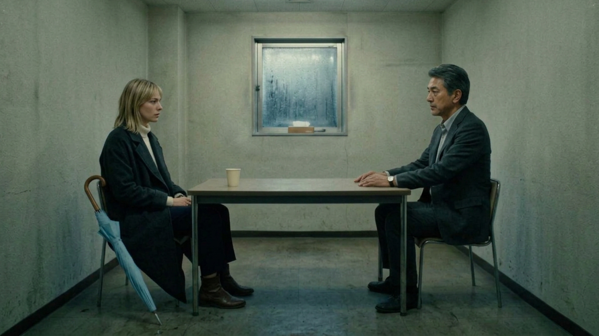
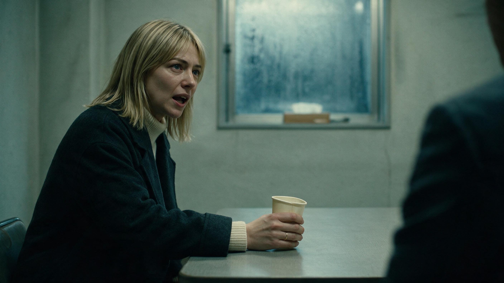
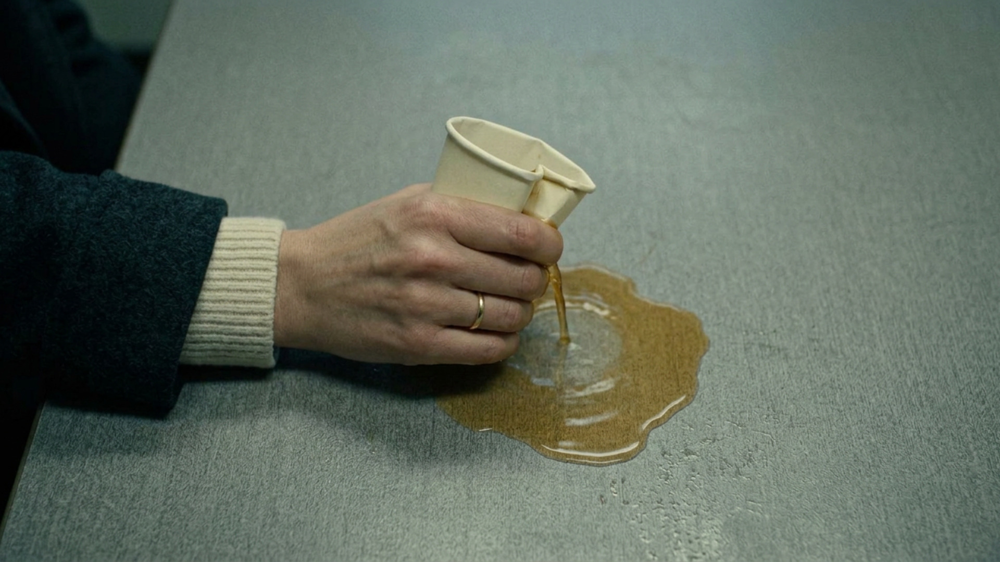

Nobody's Witness · Original Uncut · Scene 6 · nw_b166 · Vote option 2
A frame before the cup breaks
The interview-room two-shot repeats across Vera's question, Ishida's answer and her reaction. The selected frame gives her line a close-up, then the film cuts to the cup breaking.



The new image occupies the existing 147-frame (6.125-second) beat. Dialogue, captions, audio, scene order and total timing stay unchanged. Vote and installation notes.
Generation prompt
Create ONE standalone photorealistic widescreen 16:9 cinematic film still for the Tokyo noir drama Nobody's Witness, as a new intermediate shot at the moment Vera says, “Stop saying that.” Use BOTH supplied frames as continuity references: the first establishes the exact two characters, wardrobe, interview room, and muted lighting; the last shows the paper cup and the action that happens immediately afterward. Show the instant just before that final close-up: a medium close-up from Ishida's side of the table, looking across at Vera seated on the left. Match Vera's same face, straight shoulder-length blonde hair, charcoal wool coat over an ivory turtleneck. She leans forward with controlled pain turning to anger, eyes fixed on Ishida, her mouth just opening to speak. Her near hand, with the cream ribbed cuff and simple ring from the last reference, tightens around the same small paper cup; it has only begun to dent and remains upright, with all the tea still inside and no spill yet. Let Ishida's dark suit shoulder sit softly out of focus at the right edge. Keep the small frosted window, pale green-grey interview-room walls, tabletop and restrained midnight-teal fluorescent color consistent. The following shot is the crushed cup spilling tea, so this is a clearly earlier moment. Natural face and hands, quiet 35mm film realism, no extra people, no captions, no text, no watermark, no split screen or collage.